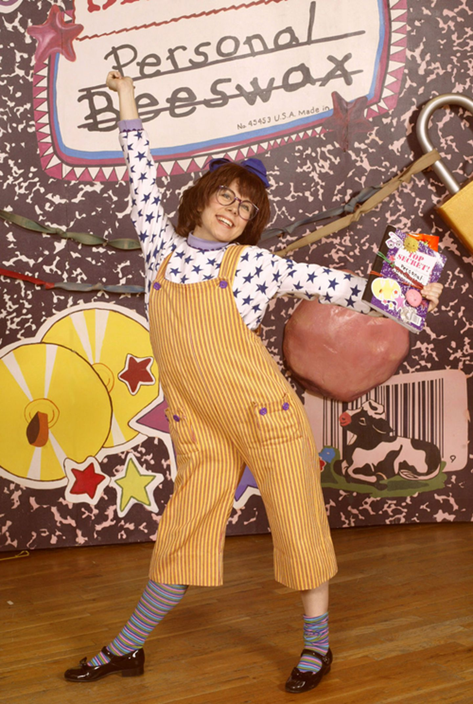

Barbara was known for writing stories purely for kids, getting into the mind of a child by
looking at a problem the simplest way possible and not analyising too much like adults do.
She didn't consider herself to be an adult at heart, and never bothered to write a children's book.
When she was a child, she knew the path to the principals office despite later wanting to become a teacher.
